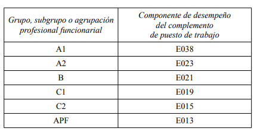

Ley4-2021-16abril-TituloI Ley4-2021-16abril-TituloVI Ley4-2021-16abril-TituloX Decreto 42-2019-22marzo-Consell-Preambulo TREBEP-Real-Decreto-Legislativo
Este decreto tiene por objeto regular las condiciones de trabajo del personal funcionario de la Administración de la Generalitat entendida en los términos establecidos en el artículo 4 de la LOGFPV.
A los efectos de lo dispuesto en este decreto y de las normas que lo desarrollen, se entenderá por:
a) Pareja de hecho: persona que respecto de la persona de referencia mantiene una relación que puede acreditar a través de la inscripción en un registro público oficial de uniones de hecho.
b) Familiar de primer grado en línea directa, por consanguinidad o afinidad: madres y padres, hijas e hijos, madres y padres políticos, cónyuge o pareja de hecho de la hija o hijo e hijas e hijos del cónyuge o pareja de hecho,
sin perjuicio de lo que pudiera establecer la normativa civil.
c) Familiar de segundo grado en línea directa o colateral, por consanguinidad: hermanos y hermanas, abuelos y abuelas, nietos y nietas; o por afinidad: abuelos, abuelas y nietos, nietas del cónyuge o pareja de hecho y cuñados
o cuñadas entendiendo por tal, el cónyuge o pareja de hecho de la hermana o hermano o bien, la hermana o hermano del cónyuge o pareja de hecho, sin perjuicio de lo que pudiera establecer la normativa civil.
d) Necesitar especial dedicación o atención continuada: supone que es preciso que el sujeto reciba tratamiento, atención, cuidados o asistencia continuada por terceras personas debido a problemas de salud, entendida esta última
como bienestar físico, psíquico y social. Asimismo, se entenderán incluidas en esta situación las personas que tengan reconocida la situación de dependencia en cualquiera de sus grados.
e) Informe del órgano competente de la administración sanitaria: informe de la inspectora o inspector médico de zona o, si el tratamiento se recibe en el hospital, el informe del facultativo responsable del paciente.
f) Tener a su cargo: relación de dependencia que no implica convivencia.
g) Cuidado directo: relación de dependencia que implica convivencia.
h) Enfermedad grave: incluye la hospitalización, la intervención quirúrgica sin hospitalización que precise reposo domiciliario o aquella enfermedad cuya gravedad o necesidad de atención continuada sea acreditada por el
facultativo responsable del paciente.
i) Guarda legal o custodia: Guarda con fines de adopción o acogimiento, tanto temporal como permanente, así como guarda legal de otra persona.
j) Bajo la denominación de víctima de violencia terrorista se entiende incluido al personal funcionario que haya sufrido daños físicos o psíquicos como consecuencia de la actividad terrorista, su cónyuge o persona con análoga
relación de afectividad, y las hijas e hijos de las personas heridas y fallecidas, siempre que ostenten la condición de personal funcionario y de víctimas de terrorismo de acuerdo con la legislación vigente, así como aquellas
funcionarias y funcionarios amenazados en los términos del artículo 5 de la Ley 29/2011, de 22 de septiembre, de Reconocimiento y Protección Integral a las Víctimas del Terrorismo, previo reconocimiento del Ministerio del Interior
o de sentencia judicial firme.
k) Relación de dependencia: Estado en que se encuentran las personas que, por razones derivadas de la edad, la enfermedad o la diversidad funcional, precisan de la atención de otra u otras personas para realizar actividades básicas
de la vida diaria.
Sin perjuicio de su acreditación por cualquiera de los medios admitidos en Derecho, con carácter general:
a) La situación de convivencia ha de ser acreditada mediante certificado de empadronamiento expedido por el ayuntamiento de residencia.
b) La condición de discapacidad o diversidad funcional ha de ser acreditada mediante resolución o certificación oficial del grado de discapacidad expedida por la conselleria competente en la materia o, en su caso, órgano equivalente
de otras administraciones públicas.
c) El grado de parentesco y la relación familiar se acreditará con el libro o libros de familia, certificación del Registro Civil o bien con la inscripción en cualquier registro público oficial de uniones de hecho.
d) La guarda legal ha de acreditarse mediante la decisión administrativa de guarda con fines de adopción o acogimiento, tanto temporal como permanente o mediante sentencia judicial que otorgue al personal funcionario la tutela o
cualquier otra institución de guarda legal, debiendo acreditarse asimismo en este último supuesto la aceptación del cargo conforme a lo establecido en la normativa civil.
e) La situación de violencia de género se acreditará de acuerdo con lo previsto en el artículo 23 de la Ley orgánica 1/2004, de 28 de diciembre, de Medidas de Protección Integral contra la Violencia de Género.
f) La condición de familia numerosa, deberá acreditarse mediante el título oficial actualizado de familia numerosa expedido por el órgano competente.
g) La condición de familia monoparental, se acreditará mediante el título correspondiente expedido por la conselleria con competencias en la materia.
h) La situación de especial dedicación se acreditará mediante informe del órgano que resulte competente de la administración sanitaria o de los servicios sociales en el que se indique dicha circunstancia. Asimismo, mediante
resolución de reconocimiento de la situación de dependencia.
i) La enfermedad grave deberá acreditarse mediante justificante de hospitalización en institución sanitaria o domiciliaria que incluya la duración de la misma; justificante médico de la intervención quirúrgica sin hospitalización que
incluya el periodo de reposo domicilario; o informe expedido por el facultativo responsable del paciente en el que conste la gravedad de la enfermedad cuando no exista hospitalización.
j) Las personas interesadas no estarán obligadas a aportar documentos que hayan sido elaborados por cualquier administración, en los términos previstos en el artículo 28 de la Ley 39/2015, de 1 de octubre, del procedimiento
administrativo común de las administraciones públicas.
1. La jornada laboral general del personal que desempeñe puestos de trabajo con componente de desempeño del complemento de puesto de trabajo inferior a los establecidos en el apartado siguiente, será de treinta y cinco horas
semanales.
2. La duración de la jornada del personal que desempeñe puestos de trabajo considerados de especial dedicación será de treinta y siete horas y treinta minutos semanales. Se considerarán puestos de especial dedicación aquellos
que tengan asignado un componente de desempeño del complemento de puesto de trabajo igual o superior al que se detalla para cada uno de los grupos de titulación siguientes:

3. Cuando las necesidades urgentes del servicio así lo exijan, previa la oportuna justificación de las circunstancias y razones organizativas que concurran en cada caso concreto, el personal podrá ser requerido por las personas
titulares de los órganos o unidades administrativas de las que dependa para realizar una jornada especial semanal superior a las establecidas en los apartados anteriores.
Una vez desaparezca la necesidad urgente por la que fue requerido, el exceso de horario será compensado a razón de dos horas por cada hora de exceso, o dos y media si el requerimiento se realiza en un día inhábil. La citada
compensación podrá disfrutarse dentro de los tres meses naturales siguientes a aquel en que se haya generado el exceso horario y acumularse en jornadas completas. Para ello se tendrán en cuenta las preferencias del personal y
las necesidades del servicio. Si estas impiden la compensación dentro de los tres meses, el plazo podrá ampliarse excepcionalmente tres meses más.
4. El personal que tenga concedida una reducción de jornada no podrá ser requerido para realizar una jornada laboral superior a la que tenga reconocida.
5. En todo caso, entre el final de una jornada y el comienzo de la siguiente mediarán, como mínimo, doce horas.
1. El personal que por el componente de desempeño del complemento de puesto de trabajo, tenga asignada la jornada semanal prevista en el apartado 2 del artículo anterior, está sujeto a incompatibilidad para ejercer cualquier
otra actividad pública o privada, salvo las legalmente exceptuadas del régimen de incompatibilidades y las que la Ley permita autorizar por excepción.
2. El personal que ocupe un puesto de trabajo que tenga asignado un componente de desempeño del complemento de puesto de trabajo igual o superior al E045 podrá ser requerido para la realización de una jornada superior cuando
así lo exijan las necesidades del servicio, en función de la mayor responsabilidad inherente a dichos puestos de trabajo. En este caso no procederá la compensación horaria prevista en el artículo 4.3, ni compensación alguna
en concepto de gratificaciones por razón del servicio y por servicios extraordinarios salvo lo dispuesto en el Decreto 24/1997, de 11 de febrero, del Consell.
1. El cómputo anual de la jornada se calculará descontando a las horas anuales equivalentes a 52 semanas y un día de trabajo, las horas correspondientes a los siguientes conceptos:
a) 22 días hábiles de vacaciones.
b) 2 días de fiestas locales.
c) 12 días de fiestas de ámbito superior.
d) 6 días por permiso por asuntos propios más los días compensatorios que puedan aprobarse, en su caso.
2. Al cómputo del apartado anterior se descontarán, además:
a) La semana de fiestas locales, a razón de 10 horas o 12 horas y 30 minutos, según sea jornada de 35 horas, o de 37 horas y 30 minutos, respectivamente.
b) Dos horas y media semanales con base en la previsión contenida en el apartado 8 del artículo 13.
3. Asimismo, deberán descontarse del cómputo anual 7 horas, o 7 horas y 30 minutos, según sea jornada de 35 horas, o de 37 horas y 30 minutos, respectivamente, por cada uno de los días 24 y 31 de diciembre, y por el día exento
de asistencia al trabajo en la semana de fiestas locales.
4. Los cálculos para el cómputo anual de la jornada de trabajo en los años bisiestos se realizarán sobre la base de 52 semanas y 2 días.
5. A los solos efectos de calcular el cómputo anual de la jornada, se tomarán como referencia las jornadas a razón de 7 horas, o de 7 horas y 30 minutos diarias, según que la jornada semanal asignada sea de 35 horas, o de 37 horas
y 30 minutos, respectivamente.
6. Cada año natural la dirección general competente en material de función pública remitirá circular con el cómputo anual general a realizar.
1. Se tendrá derecho a la reducción de jornada hasta la mitad de la misma, con disminución proporcional de retribuciones:
a) Por razones de guarda legal, cuando el personal tenga a su cargo algún niño o niña de 12 años o menor, persona mayor que requiera especial dedicación, o persona con un grado de discapacidad física, psíquica o sensorial igual o
superior al 33 % que no desempeñe actividad retribuida que supere el salario mínimo interprofesional.
b) Por tener a su cargo al cónyuge o pareja de hecho o un familiar hasta el segundo grado de consanguinidad o afinidad que requiera especial dedicación.
c) Personal que por tener reconocido un grado de discapacidad o por razón de larga o crónica enfermedad no pueda realizar su jornada laboral completa, extremo que deberá acreditarse inicialmente por la Unidad de Valoración
Médica de Incapacidades y, en aquellos casos en que sea revisable, ratificarse de forma anual por dicha Unidad.
d) Personal funcionario a quien le falte menos de cinco años para cumplir la edad de jubilación forzosa. Siempre que resulte compatible con el correcto funcionamiento de los servicios, se podrá autorizar que la reducción de jornada
se acumule en jornadas completas, sin que dicha acumulación pueda suponer, en ningún caso, un periodo superior a seis meses continuados en un periodo de un año a contar desde el día de su inicio.
2. El personal funcionario, que por nacimiento de hijas e hijos prematuros o por cualquier otra causa deba permanecer hospitalizado a continuación del parto, tendrá derecho a reducir su jornada de trabajo hasta un máximo de dos
horas, con la disminución proporcional de sus retribuciones, sin perjuicio del permiso previsto en el artículo 28 de este decreto.
3. El personal que ocupe puestos de trabajo con componente de desempeño del complemento de puesto de trabajo que comporten una jornada de 35 horas semanales, podrá solicitar una jornada reducida, continua e ininterrumpida de
las 9 a las 14 horas, o las equivalentes si el puesto desempeñado está sujeto a turnos, percibiendo un 75 % del total de sus retribuciones. Para la concesión de esta jornada reducida se requerirá que la persona solicitante acredite la
existencia de circunstancias personales distintas de las previstas en el apartado 1 que justifiquen su necesidad, debiendo motivarse su denegación.
4. Se podrá solicitar reducción de jornada de una hora diaria sin disminución de retribuciones por las causas siguientes:
a) Por las causas previstas en los apartados a) b) y c) del número 1.
No obstante, en el caso de guarda legal de niñas o niños de 12 años o menores, se podrá conceder únicamente cuando concurra alguno de los siguientes supuestos:
1.º Que el menor requiera especial dedicación
2.º Que la niña o niño tenga 3 años o menos
3.º Que tenga a su cargo dos o más niñas o niños de 12 años o menores(anulado)
4.º Que se trate de familia monoparental
b) Durante un plazo máximo de 6 meses, a contar desde la fecha de finalización del permiso correspondiente, por adopción, acogimiento o guarda con fines de adopción, de un menor de más de 12 meses, que por sus circunstancias y
experiencias personales debidamente acreditadas por los servicios sociales competentes o que, por provenir del extranjero, tengan especiales dificultades de inserción social y familiar.
5. Cuando por razones de enfermedad muy grave sea preciso atender el cuidado del cónyuge, pareja de hecho o de un familiar de primer grado, el personal funcionario tendrá derecho a solicitar una reducción de hasta el 50 % de la
jornada laboral, con carácter retribuido y por el plazo máximo de un mes.
Para el disfrute de esta reducción se requiere informe del facultativo que asiste al paciente que determine que la enfermedad es muy grave y la necesidad de cuidados para atender a la persona enferma. Esta reducción quedará sin
efecto, aun cuando no haya transcurrido el plazo máximo de un mes, en caso de alta o fallecimiento del familiar. En el supuesto de que hubiera más de un beneficiario de este derecho por el mismo sujeto causante, podrán disfrutar
del mismo de forma parcial, respetando en todo caso el plazo máximo.
6. Las empleadas víctimas de violencia sobre la mujer, para hacer efectivo su derecho a la asistencia social integral, tendrán derecho a la reducción de un tercio de la jornada sin reducción de haberes, o bien de un 50 % de la
jornada, con una reducción de haberes correspondiente a la diferencia entre el tercio y la mitad de aquella.
7. El personal víctima de violencia terrorista tendrá derecho a una reducción de jornada en los mismos términos previstos en el apartado anterior.
8. Cuando el personal se reincorpore al servicio efectivo tras la finalización de un tratamiento oncológico podrá solicitar, durante el plazo máximo de un mes desde la fecha del alta médica, una reducción de hasta el 25 % de la
jornada sin reducción de haberes. Este plazo podrá ampliarse en un mes más cuando el personal justifique la persistencia en su estado de salud de las circunstancias derivadas del tratamiento oncológico.
Los órganos competentes en materia de personal concederán esta reducción cuando la misma favorezca la plena recuperación funcional de la persona o evite situaciones de especial dificultad o penosidad en el ejercicio de su trabajo.
La persona solicitante deberá acompañar la documentación acreditativa de la existencia de esta situación.
1. Las reducciones de jornada previstas en el artículo 7 son incompatibles entre sí, a excepción de las de los apartados 7.1.c), 7.6 y 7.7, que serán compatibles con las restantes.
2. En el supuesto de que se tenga derecho al disfrute simultáneo de varias reducciones de jornada compatibles entre sí, solo podrá concederse una de ellas sin deducción de retribuciones y al resto se les aplicará la deducción
proporcional que corresponda.
3. Si varios funcionarios o funcionarias de la administración de la Generalitat tuvieran derecho a una reducción de jornada respecto a un mismo sujeto causante, podrán disfrutar de este derecho de forma parcial. En estos casos, las
solicitudes de reducción de jornada parcial, deberán presentarse de forma simultánea indicando, tanto el número global de horas de reducción, como el número concreto que disfrutará cada uno de ellos. El disfrute de la reducción de
forma parcial, será ininterrumpido, es decir, una vez concedido solo podrá modificarse el régimen pactado mediante nueva solicitud y resolución del órgano competente.
4. El personal acogido a las anteriores reducciones de jornada verá disminuida proporcionalmente la jornada que realice en las situaciones previstas en el artículo 13.
5. El personal que solicite dejar sin efecto una reducción de jornada no podrá comenzar a disfrutar otra por la misma causa hasta que transcurra, como mínimo, un mes desde que se dejó sin efecto la reducción anterior.
6. Las reducciones de jornada que comporten disminución de retribuciones serán concedidas por la dirección general competente en materia de función pública. En el caso de que no comporten disminución de retribuciones, será el
órgano competente en materia de personal de cada conselleria u organismo quien las conceda.
7. El personal deberá informar al órgano competente en materia de personal con quince días de antelación de la fecha en que se reincorporará a su jornada ordinaria.
8. Las previsiones del apartado 5 no serán de aplicación a las empleadas víctimas de violencia sobre la mujer ni al personal funcionario víctima de terrorismo que disfruten de una reducción de jornada por esta causa.
9. En los supuestos en que el personal tenga derecho a solicitar una reducción de jornada de una hora diaria sin deducción de retribuciones, pero solicite un número de horas de reducción superior, dirigirá su solicitud a la dirección
general competente en materia de función pública, la cual resolverá ambas reducciones descontando la hora diaria al número global de horas de reducción solicitadas.
1. La jornada semanal en las dependencias administrativas se realizará, con carácter general, de lunes a viernes en régimen de horario flexible.
2. La parte principal, llamada de tiempo fijo o estable, será de cinco horas diarias, y será de permanencia obligatoria para todo el personal entre las 09.00 y las 14.00 horas, de lunes a viernes.
3. La parte variable del horario estará constituida por la diferencia entre la jornada que corresponda realizar y las cinco horas diarias de la parte de tiempo fijo o estable del horario.
4. La parte variable señalada en el apartado anterior se deberá realizar, con carácter general, dentro de la siguiente distribución horaria:
a) Desde las 07.30 a las 09.00 horas, y desde las 14.00 a las 19.00 horas, de lunes a jueves.
b) Desde las 07.30 a las 09.00 horas, y desde las 14.00 a las 16.00 horas, los viernes.
5. Con carácter general las horas de la jornada que se presten en la parte flexible del horario se distribuirán a voluntad del personal.
1. Se excluye de las jornadas y horarios regulados en los artículos anteriores a todo aquel personal que, por razón de la actividad desempeñada, tenga que realizar unas distintas, sin que en ningún caso se pueda exceder del cómputo
anual de la jornada a realizar.
2. Las jornadas y horarios especiales que se establezcan por razón de la actividad los aprobará el órgano competente en materia de personal de cada conselleria u organismo autónomo, previa negociación con las organizaciones
sindicales que tengan la condición de representativas en el ámbito correspondiente y tras ser oída la junta de personal que proceda, debiendo ser aprobados con anterioridad al uno de diciembre del año anterior a su entrada en vigor.
3. En concreto, en los centros de trabajo en que se preste servicio a turnos, y en el caso de centros docentes con una programación por cursos respecto del personal no docente que preste sus servicios en los mismos, los cuadrantes
de las jornadas especiales y los horarios se regirán por las siguientes previsiones, en los términos de los pactos o acuerdos alcanzados en las Mesas correspondientes:
a) Los cuadrantes serán elaborados anualmente por la dirección territorial u órgano del que dependa a propuesta de la dirección del centro, previa negociación con las organizaciones sindicales que tengan la condición de
representativas en el ámbito correspondiente y tras ser oída la junta de personal que proceda, debiendo ser aprobados por el órgano competente en materia de personal con anterioridad al uno de diciembre del año anterior a su
entrada en vigor.
b) En el caso de centros docentes con una programación por cursos, el cuadrante para el personal no docente que desempeñe su trabajo en los mismos se aprobará antes de finalizar el curso anterior a aquel en el que deba aplicarse.
De igual forma, en el caso de cualquier otro centro que tenga una programación diferente a la anual, el horario se aprobará antes de terminar el ejercicio anterior al que corresponda aplicarse.
c) En el supuesto de aquellos centros en que, como consecuencia de las características especiales de la actividad que se presta en los mismos, se justifique la necesidad de aprobar o ajustar el cuadrante en momentos diferentes del
año, se podrá realizar respetando las garantías previstas en este artículo y siempre con carácter previo a su entrada en vigor.
d) Asimismo, el cuadrante será expuesto de forma visible en cada centro de trabajo y en él constará, como mínimo, el departamento, nombre de la trabajadora o trabajador, categoría y turno de trabajo, especificando el horario de
cada turno y el cómputo semanal, mensual o anual.
e) El personal que debiera asistir a su puesto de trabajo los días 24, 31 de diciembre o el día exento de asistencia al trabajo de las fiestas locales, los verá compensados por dos días de descanso por cada uno de aquellos, o la
parte proporcional que corresponda, en función de la jornada laboral que efectivamente realice. No obstante lo expuesto y respecto del personal que desempeñe su trabajo en centros de atención directa del ámbito de servicios
sociales en régimen de turnos, se entenderá que únicamente tienen derecho a la compensación de dos días de descanso prevista en el párrafo anterior, aquellos que inicien su jornada laboral en los días citados.
4. Regirá idéntico procedimiento para la aprobación del sistema de compensación horaria, siendo de aplicación, como mínimo, lo previsto en el artículo 4.3 de este decreto.
La jornada y horario de trabajo previstos en los artículos anteriores no será de aplicación al personal que, de conformidad con lo dispuesto en normas de rango superior, deban realizar uno distinto.
1. Sin perjuicio del régimen de compensación horaria previsto en el artículo 4.3, la diferencia en cómputo semanal entre la jornada que tenga que realizar el personal por razón del puesto que ocupe y la efectivamente prestada, sea
por exceso o por defecto, podrá ser objeto de recuperación o compensación dentro del mes natural en que se haya producido, o de los dos meses siguientes al mismo.
2. El tiempo de asistencia a las acciones formativas, seminarios o jornadas de formación organizados por el órgano de la Generalitat competente en materia de formación o por las organizaciones sindicales firmantes del Acuerdo
Administración-Sindicatos en materia de formación continua, computará como tiempo de trabajo a todos los efectos si tienen lugar dentro de la jornada laboral, no siendo objeto de recuperación, e incluirá el tiempo necesario
para el desplazamiento hasta el lugar de impartición.
1. El personal quedará exento de la asistencia al trabajo con motivo de las fiestas locales que se celebran en la Comunitat Valenciana los días que se señalan a continuación, sin perjuicio de lo previsto en el apartado 6 de este artículo:
a) El día 18 de marzo, el personal cuyo centro de trabajo radique en la ciudad de Valencia o en aquellos otros municipios de la provincia donde se celebren fiestas de fallas.
b) El día 23 de junio, el personal cuyo centro de trabajo radique en la ciudad de Alicante o en aquellos otros municipios de la provincia donde se celebren las fiestas de San Juan.
c) El martes de la semana de las fiestas de la Magdalena, el personal cuyo centro de trabajo radique en la ciudad de Castellón de la Plana o en aquellos otros municipios de la provincia donde se celebren dichas fiestas.
2. Cuando el día exento de asistencia al trabajo previsto en el apartado anterior coincida en festivo o inhábil, se sustituirá por otro día dentro de la semana de fiestas locales de dicho año. En este supuesto, la dirección general
competente en materia de función pública establecerá mediante circular, con un mínimo de 15 días de antelación, el día concreto exento de asistencia al trabajo para el personal de servicios burocráticos.
3. Por semana de fiestas de cada uno de los municipios deberá entenderse cinco días laborables anteriores o posteriores al festivo principal. El día de inicio y final se determinará anualmente por la dirección general competente en
materia de función pública.
4. No computará en los cinco días laborables previstos en el apartado anterior el día exento de asistencia al trabajo, ni el que pueda sustituirlo, en su caso.
5. Las previsiones contenidas en los apartados anteriores serán de aplicación cuando se realice el cómputo anual de la jornada establecido en el artículo 6.
6. En los municipios donde existan centros de trabajo de la Generalitat que no se acojan a las semanas de fiestas anteriormente establecidas, el órgano competente en materia de personal, a los efectos de la aplicación del horario
especial previsto en el apartado siguiente, será el encargado de establecer la fecha de inicio y finalización de la semana de fiestas locales y de determinar el día de esa semana en que se estará exento de la asistencia al trabajo.
7. El horario de trabajo durante la semana de fiestas de cada municipio de la Comunidad Valenciana en que radique el puesto de trabajo será de 09.00 a 14.00 horas.
8. Desde el 15 de mayo al 15 de octubre, ambos inclusive, y en los periodos de vacaciones escolares de Navidad y Pascua, la jornada de trabajo se reducirá en dos horas y media semanales respecto a la que corresponda realizar.
9. Se estará exento de la asistencia al trabajo los días 24 y 31 de diciembre.
1. El horario de permanencia obligatoria del personal de servicios burocráticos podrá flexibilizarse en una hora diaria en los siguientes supuestos:
a) Quienes tengan a su cuidado directo personas que requieran una especial dedicación.
b) Quienes tengan a su cuidado directo hijos o hijas, o niños o niñas en acogimiento preadoptivo o permanente, de 14 años o menores de esa edad.
c) Quienes tengan a su cargo a un familiar hasta el segundo grado por consanguinidad o afinidad, o persona legalmente bajo su guarda o custodia, con enfermedad grave debidamente acreditada con indicación expresa de la necesidad
de cuidados específicos, o con un grado de discapacidad igual o superior al 65 %.
d) Para las empleadas públicas en estado de gestación.
e) Para el personal que por razón de larga o crónica enfermedad no pueda realizar su jornada laboral completa, acreditado conforme establece el artículo 7.1.c.
2. El horario de permanencia obligatoria del personal, podrá flexibilizarse en dos horas diarias a solicitud de las personas interesadas en los siguientes supuestos:
a) Quienes tengan a su cuidado directo hijos o hijas, así como niños o niñas en acogimiento preadoptivo o permanente, con diversidad funcional, con el fin de conciliar, cuando coincidan, los horarios de los centros educativos
ordinarios de integración y de educación especial, así como de otros centros donde estas personas reciban atención, con los horarios de los puestos de trabajo.
b) En el caso de ser padre o madre de familia numerosa, hasta el día en que cumpla 15 años de edad el o la menor de los hijos o hijas.
c) En el caso de ser padre o madre de familia monoparental, hasta el día en que cumpla 15 años de edad el o la menor de los hijos o hijas.
d) Las empleadas víctimas de violencia sobre la mujer, con la finalidad de hacer efectivo su derecho a la asistencia social integral, por el tiempo que acrediten los servicios sociales de atención o salud, según proceda.
e) Las víctimas de violencia terrorista, en tanto sea necesario para hacer efectivo su protección o su derecho a la asistencia social integral, ya sea por razón de las secuelas provocadas por la acción terrorista, ya sea por la amenaza
a la que se encuentran sometidas. Además de dicha flexibilidad, se podrán adoptar otras formas de ordenación del tiempo de trabajo, como la adaptación del horario u otras que sean aplicables.
3. La flexibilidad en el cumplimiento del horario regulada en el apartado anterior en ningún caso supondrá reducción de la jornada laboral, debiendo el personal recuperar dichas horas conforme a lo dispuesto en el artículo 12.
4. El personal que realice las jornadas y horarios especiales previstos en el artículo 10 podrá hacer uso de esta flexibilidad si lo permite la atención básica a las necesidades de dicho servicio.
1. El personal tendrá derecho a 48 horas continuadas de descanso por cada período semanal trabajado. Si su aplicación impide la cobertura de los servicios que se prestan, se fijará este descanso, que en ningún caso será inferior a 36
horas continuadas, previa negociación con las organizaciones sindicales representativas, tras ser oído el órgano de representación unitaria correspondiente.
2. En los centros de trabajo en que se preste el servicio a turnos, el disfrute del descanso semanal coincidirá, como mínimo, con un fin de semana al mes.
1. Durante la jornada laboral se dispondrá de una pausa de treinta minutos de descanso, computable como de trabajo efectivo.
2. El personal de servicios burocráticos o unidades de índole similar hará uso de ella, preferentemente, entre las 10.00 y las 12.00 horas.
3. A los efectos de lo previsto en el apartado anterior el personal se organizará en turnos con la supervisión de la persona responsable de la unidad administrativa con el fin de que las dependencias y servicios queden adecuadamente
atendidos.
1. El personal estará obligado a registrar sus entradas y salidas del centro de trabajo mediante los sistemas establecidos al efecto por los órganos competentes en materia de personal. Los centros de trabajo establecerán los medios
necesarios para su seguimiento.
2. Las personas titulares de las unidades administrativas de las que dependa el personal o, en su caso, la persona titular de la dirección del centro, colaborarán en el control del personal adscrito a las mismas, sin perjuicio del
control general del órgano que lo tenga asignado en sus competencias.
1. Las oficinas de las sedes centrales de las consellerias, de las sedes principales de sus delegaciones, direcciones o servicios territoriales y las oficinas PROP, prestarán el servicio de información administrativa general y registro
de documentos en horario general de apertura al público de 09.00h a 14.30h, de lunes a viernes.
2. Los jueves, al menos en una oficina PROP de cada provincia, se prolongará el servicio de información administrativa general y registro de documentos desde las 14.30h hasta las 19.00h ininterrumpidamente. Este horario
complementario será atendido por el personal que ocupe puestos de trabajo con funciones de realización del horario especial de la unidad de registro. Las oficinas en que se prestará este servicio serán publicitadas por el órgano
competente en la materia a través de la página web de la GVA.
3. Durante la semana de fiestas locales correspondiente a cada emplazamiento, el horario de servicio de información administrativa general y registro de documentos que regirá será de 09.00h a 14.00h, de lunes a viernes.
4. Desde el 15 de mayo al 15 de octubre, ambos inclusive, y en los periodos de vacaciones escolares de Navidad y Pascua, el horario de atención al público será el previsto en el apartado 1 de este artículo.
5. Sin perjuicio de lo anterior, la persona titular de cada conselleria podrá disponer mediante orden el establecimiento de otros emplazamientos adicionales para la prestación del servicio de información administrativa general y de
registro de documentos que contribuyan a reducir desplazamientos a la ciudadanía.
6. Los órganos competentes en materia de personal podrán establecer, mediante resolución, un horario ampliado de registro para aquellos procedimientos que conlleven un gran volumen de documentación en un periodo determinado.
Este horario específico se hará público y será vigente mientras dure el plazo de presentación de escritos, comunicaciones y otros documentos en el procedimiento correspondiente.
1. En los casos de enfermedad o incapacidad temporal se regulan las siguientes situaciones:
a) Ausencias por causa de enfermedad o accidente sin que se haya expedido parte médico de baja: el personal comunicará su ausencia y la razón de la misma a la unidad de personal u órgano o persona responsable, con preferencia
durante la hora después del inicio de la jornada, salvo causas justificadas que lo impidan. En todo caso, tras la reincorporación al puesto de trabajo deberá presentar justificante expedido por el facultativo competente si la
ausencia es de dos o tres días de duración o, si es inferior, cuando exista reiteración.
b) Ausencia por incapacidad temporal: el personal deberá presentar, de conformidad con la normativa estatal en esta materia, el parte médico acreditativo de la baja en el plazo de tres días contados a partir del día de su expedición,
y los partes de confirmación deberán ser entregados en el centro de trabajo, como máximo, el tercer día hábil siguiente a su expedición. En caso de no entregar los citados partes, se descontarán en nómina los días de ausencia, en los
términos y condiciones previstos en el punto 3 del presente artículo. Una vez expedido parte médico de alta, la incorporación al puesto de trabajo ha de ser el primer día hábil siguiente a su expedición, y aportará en ese momento el
citado parte al órgano de personal.
c) Ausencias por riesgo durante el embarazo y riesgo durante la lactancia natural: el personal deberá presentar la documentación exigida en la normativa aplicable en materia de seguridad social.
2. Si las ausencias, aún justificadas, son reiteradas, se valorará la situación entre las o los representantes sindicales y la dirección correspondiente, a instancia de cualquiera de las partes, y se propondrá conjuntamente la solución
adecuada al caso.
3. Los descuentos por faltas de asistencia injustificadas al trabajo o incumplimiento de jornada se determinarán de conformidad con lo previsto en la legislación en vigor.
4. Las faltas de asistencia al trabajo, totales o parciales, de las empleadas públicas víctimas de violencia de género tendrán la consideración de justificadas durante el tiempo y en las condiciones en que así se determine por los
servicios sociales o de salud, según proceda.
5. Asimismo, tendrán la consideración de justificadas las faltas de asistencia al trabajo de las víctimas de violencia terrorista durante todo el tiempo que precisen para hacer efectivo su protección o su derecho a la asistencia social
integral, ya sea por razón de las secuelas provocadas por la acción terrorista, ya sea por la amenaza a la que se encuentran sometidas.
El personal, previa comunicación al órgano competente, podrá disfrutar de los permisos establecidos en los artículos siguientes en los términos previstos en los mismos, no siendo necesaria la autorización con carácter previo, excepto
en el supuesto previsto en el artículo 40. Salvo que se establezca expresamente otra cosa el disfrute de los permisos determinados por un hecho causante se iniciará el primer día laborable tras dicho hecho.
1. El personal podrá disfrutar de quince días naturales y consecutivos por razón de matrimonio o inscripción en el Registro de Uniones de Hecho de la Comunitat Valenciana o en cualquier otro registro público oficial de uniones de
hecho.
2. Este permiso puede acumularse al período vacacional y a los días de asuntos propios y no se disfrutará necesariamente a continuación del hecho causante, pero siempre dentro de los 6 meses siguientes al matrimonio o inscripción
en el Registro de Uniones de Hecho de la Comunitat Valenciana.
3. El personal que disfrute de este permiso por inscripción en un registro de uniones de hecho no podrá disfrutarlo de nuevo en caso de contraer matrimonio posteriormente con la misma persona.
4. Asimismo, el personal tendrá derecho a permiso, tanto por el día de la celebración de su matrimonio o inscripción de su unión de hecho, como por el de un familiar dentro del segundo grado de consanguinidad o afinidad. Si el
lugar en el que se realiza la celebración superara la distancia de 375 kilómetros, computados desde la localidad de residencia de dicho personal, el permiso será de dos días naturales consecutivos.
1. Cuando deban realizarse dentro de la jornada de trabajo, se concederá permiso por el tiempo indispensable para la realización de exámenes prenatales y técnicas para la preparación al parto de las funcionarias embarazadas.
2. Dentro de la jornada de trabajo el personal funcionario tendrá derecho a ausentarse para someterse a técnicas de fecundación o reproducción asistida por el tiempo necesario para su realización, previa justificación de la
necesidad.
En los casos de adopción, acogimiento o guarda con fines de adopción se tendrá permiso para la asistencia a las preceptivas sesiones de información y preparación, así como para la realización de los preceptivos informes
psicológicos y sociales previos a la declaración de idoneidad, que deban realizarse dentro de la jornada de trabajo.
Este permiso se concederá en los términos y condiciones previstos en el artículo 49, a) del TREBEP.
1. Sin perjuicio de lo dispuesto en los apartados siguientes, este permiso se concederá en los términos y condiciones previstos en el artículo 49, b) del TREBEP.
2. Este permiso se ampliará en dos semanas en los supuestos de adopción o acogimiento de menores que por sus circunstancias y experiencias personales o que, por provenir del extranjero, tengan especiales dificultades de inserción
social y familiar, debidamente acreditadas por los servicios sociales competentes.
3. El disfrute del permiso por adopción o acogimiento internacional de hasta dos meses de duración podrá fraccionarse o ser continuado, en función de la tramitación que se requiera en el país de origen de la persona adoptada.
1. Los permisos por nacimiento para la madre biológica y por adopción, guarda con fines de adopción o acogimiento, tanto temporal como permanente, podrán disfrutarse a jornada completa o a tiempo parcial.
2. Para que puedan disfrutarse a tiempo parcial, la persona interesada deberá solicitarlo con una antelación de quince días hábiles, acompañando informe de la persona responsable de la unidad administrativa en que estuviera
destinada, en el que se acredite que quedan debidamente cubiertas las necesidades del servicio.
El órgano competente, a la vista de la solicitud y del informe correspondiente, dictará resolución con una antelación mínima de cinco días naturales a la fecha de disfrute pretendida. La falta de resolución expresa en el plazo antedicho
tendrá efectos estimatorios.
Dicha solicitud podrá realizarse tanto al inicio del descanso correspondiente como en un momento posterior y podrá extenderse a todo el período de descanso o a parte del mismo, sin perjuicio de lo dispuesto en el apartado siguiente.
3. El disfrute a tiempo parcial del permiso se ajustará a las siguientes reglas:
a) Este derecho podrá ser ejercido por cualquiera de las dos personas progenitoras, y en cualquiera de los supuestos de disfrute simultáneo o sucesivo del periodo de descanso. En el supuesto de nacimiento, la madre biológica no
podrá hacer uso de esta modalidad del permiso durante las seis semanas inmediatas posteriores al parto, que serán de descanso obligatorio.
b) El período de disfrute se aplicará proporcionalmente en función de la jornada de trabajo que se realice, la cual se fijará a elección de la persona interesada no pudiendo ser inferior, en ningún caso, a la mitad de su jornada
ordinaria, ni superar la duración establecida para el permiso.
c) El disfrute del permiso será ininterrumpido. Una vez acordado solo podrá modificarse por iniciativa de la persona interesada y únicamente por causas relacionadas con su salud o la de la menor o el menor.
d) Durante el período de disfrute del permiso a tiempo parcial no podrá la persona beneficiaria prestar servicios extraordinarios fuera de la jornada de trabajo que realice como consecuencia de la concesión de este permiso.
4. Cuando las necesidades del servicio lo permitan se concederá a la o al interesado la parte de jornada solicitada para el disfrute del permiso a tiempo parcial que convenga a sus intereses personales.
5. El permiso a tiempo parcial será incompatible con el disfrute simultáneo por la misma persona de los permisos previstos por lactancia, nacimiento de hijas o hijos prematuros y con la reducción de jornada por razones de guarda
legal.
Este permiso se concederá en los términos y condiciones previstos en el artículo 48, f) del TREBEP.
Por nacimiento de hijas o hijos prematuros o que por cualquier otra causa deban permanecer hospitalizados a continuación del parto, el personal tendrá derecho a ausentarse durante un máximo de dos horas diarias percibiendo las
retribuciones íntegras.
1. Los órganos competentes en materia de personal podrán conceder, siempre que ambas personas progenitoras, adoptantes, guardadoras con fines de adopción o acogedoras de carácter permanente trabajen, una reducción de la
jornada de trabajo de al menos la mitad de la duración de aquella percibiendo las retribuciones íntegras, para el cuidado del hijo o hija menor de edad afectado por cáncer o por otra enfermedad grave.
2. El cáncer u otra enfermedad grave de la persona menor deberá implicar un ingreso hospitalario de larga duración que requiera su cuidado directo, continuo y permanente. Se considerarán también como situaciones protegidas:
a) La continuación del tratamiento médico o cuidado del menor en el domicilio tras el diagnóstico y hospitalización por cáncer o enfermedad grave.
b) Cuando exista una recaída o agudización del menor por el cáncer o la misma enfermedad grave, incluidos aquellos supuestos en los que no sea necesario un nuevo ingreso hospitalario, y requieran de un cuidado directo, continuo
y permanente.
3. La acreditación de que el menor padece cáncer u otra enfermedad grave, así como la necesidad de su cuidado directo, continuo y permanente durante el tiempo de hospitalización y tratamiento continuado de la enfermedad, se
efectuará mediante informe del personal facultativo responsable de la asistencia médica de la persona afectada por la enfermedad.
En los supuestos de recaída o agudización del cáncer o de la misma enfermedad grave, deberá aportarse nuevo informe médico del personal facultativo que asista al menor en el que se acredite esta circunstancia y la necesidad
de cuidados directos, continuos y permanentes.
4. El personal que tenga derecho al permiso regulado en este artículo percibirá sus retribuciones íntegras, con independencia de la reducción de jornada autorizada.
No obstante, cuando concurran en ambas personas progenitoras, adoptantes, guardadoras con fines de adopción o acogedoras de carácter permanente, por el mismo sujeto y hecho causante, las circunstancias necesarias para tener
derecho a esta reducción de jornada o, en su caso, puedan tener la condición de persona beneficiaria de la prestación establecida para este fin en el régimen de la Seguridad Social que les sea de aplicación, se tendrá derecho a la
percepción de las retribuciones íntegras durante el tiempo que dure la reducción de su jornada de trabajo, siempre que la otra persona progenitora, adoptante o acogedora de carácter preadoptivo o permanente no cobre sus
retribuciones íntegras en virtud de este permiso o como persona beneficiaria de la prestación establecida para este fin en el régimen de la Seguridad Social que le sea de aplicación. En caso contrario, solo se tendrá derecho a la
reducción de jornada, con la consiguiente reducción de retribuciones.
Asimismo, en el supuesto de que ambos progenitores tengan la condición de personal empleado público y presten servicios en el mismo órgano o entidad, se podrá limitar el ejercicio simultáneo de esta reducción de jornada por
razones fundadas en el correcto funcionamiento del servicio.
5. La reducción de jornada podrá concederse hasta un porcentaje máximo del 99 % cuando se trate de un ingreso hospitalario ocasionado por el cáncer u otra enfermedad grave, así como cuando se esté en una fase crítica del
tratamiento según conste en el informe médico.
En el resto de casos no incluidos en el párrafo anterior, el porcentaje de reducción de jornada podrá ser de hasta el 75 %. Siempre que resulte compatible con el correcto funcionamiento de los servicios se podrá autorizar que la
reducción de jornada se acumule en jornadas completas por el tiempo que resulte estrictamente necesario según informe médico.
6. El permiso se concederá por un periodo inicial de hasta un mes. No obstante, mientras subsista la necesidad del cuidado directo, continúo y permanente se prorrogará por periodos de hasta dos meses y, como máximo, hasta que la
o el menor cumpla los dieciocho años.
En el caso de que el informe médico determine la necesidad de un tiempo inferior o superior, se concederá por el periodo indispensable que conste en el informe. La concesión de las sucesivas prórrogas requerirá en cada caso
previa solicitud de la persona interesada, a la que deberá acompañar un nuevo informe médico actualizado que acredite la necesidad de los cuidados del o de la menor.
Este permiso se concederá en los términos y condiciones previstos en el artículo 49, c) del TREBEP.
1. En los permisos por nacimiento, adopción, guarda, acogimiento y del progenitor diferente a la madre biológica, el tiempo transcurrido durante el disfrute de estos permisos se computará como de servicio efectivo a todos
los efectos, garantizándose la plenitud de derechos económicos del personal durante todo el periodo de duración del permiso, y, en su caso, durante los periodos posteriores al disfrute de este, si de acuerdo con la normativa
aplicable, el derecho a percibir algún concepto retributivo se determina en función del periodo de disfrute del permiso.
2. El personal que haya hecho uso de los permisos citados en el apartado anterior, tendrá derecho, una vez finalizado el periodo de permiso, a reintegrarse a su puesto de trabajo en términos y condiciones que no les resulten menos
favorables al disfrute del permiso, así como a beneficiarse de cualquier mejora en las condiciones de trabajo a las que hubieran podido tener derecho durante su ausencia.
Las empleadas públicas en estado de gestación disfrutarán de un permiso retribuido, a partir del día primero de la semana 37 de embarazo, hasta la fecha del parto.
En el supuesto de gestación múltiple este permiso podrá iniciarse el primer día de la semana 35 de embarazo, hasta la fecha del parto.
1. El personal podrá acudir durante su jornada laboral, por necesidades propias o de menores, personas mayores o con diversidad funcional física, psíquica o sensorial, a su cargo, a:
a) Consultas, tratamientos y exploraciones de tipo médico durante el tiempo indispensable para su realización.
b) Reuniones de coordinación y tutorías de sus centros de educación especial.
c) Consultas de apoyo adicional en el ámbito socio-sanitario. Asimismo, podrá acudir por el tiempo indispensable durante su jornada laboral a consultas, tratamientos y exploraciones médicas del cónyuge o pareja de hecho, cuando
se acredite documentalmente la necesidad de asistir con acompañante.
2. Las ausencias parciales al puesto de trabajo como consecuencia de la asistencia a situaciones recogidas en el punto anterior, durarán el tiempo indispensable para su realización, considerándose como de trabajo efectivo
siempre que la ausencia se limite al tiempo necesario y se justifique documentalmente por el personal funcionario su asistencia y la hora de la cita.
3. El personal tendrá permiso para ausentarse de su puesto de trabajo para asistir a las tutorías o a cualquier otro requerimiento del centro escolar de sus hijas e hijos.
Estas ausencias durarán el tiempo indispensable para su realización y se considerarán de trabajo efectivo siempre que tengan lugar dentro del horario laboral y se acredite que no es posible acudir en horario distinto por no
permitirlo el centro escolar.
4. Asimismo, en caso de interrupción del embarazo, la empleada pública tendrá derecho a seis días naturales y consecutivos a partir del hecho causante, siempre y cuando no se encuentre en situación de incapacidad temporal.
1. Por fallecimiento del cónyuge, pareja de hecho o de un familiar dentro del primer grado de consanguinidad o afinidad, tres días hábiles cuando el suceso se produzca en la misma localidad, y cinco días hábiles cuando sea
en distinta localidad.
2. Cuando se trate de fallecimiento de un familiar dentro del segundo grado de consanguinidad o afinidad, el permiso será de dos días hábiles cuando se produzca en la misma localidad y de cuatro días hábiles cuando sea en
distinta localidad.
3. Los días en que se haga uso de este permiso deberán ser consecutivos e inmediatamente posteriores al hecho causante. Únicamente se computará como permiso el día del fallecimiento cuando la persona no inicie la jornada
de trabajo que le correspondiera realizar ese día.
4. Para el cómputo de los plazos en la misma o distinta localidad se tomará como referencia el término municipal de la residencia habitual de la persona solicitante.
1. Por accidente o enfermedad grave del cónyuge, pareja de hecho o de un familiar dentro del primer grado de consanguinidad o afinidad, tres días hábiles cuando el suceso se produzca en la misma localidad, y cinco días hábiles
cuando sea en distinta localidad.
2. Cuando se trate de accidente o enfermedad grave de un familiar dentro del segundo grado de consanguinidad o afinidad, el permiso será de dos días hábiles cuando se produzca en la misma localidad y de cuatro días hábiles
cuando sea en distinta localidad.
3. Se tendrá derecho a este permiso cada vez que se acredite nuevamente una situación de gravedad de conformidad con lo dispuesto en el artículo 3.i de este decreto.
4. Para el cómputo de los plazos en la misma o distinta localidad se tomará como referencia el término municipal de la residencia habitual de la persona solicitante.
El personal dispondrá de permiso durante el día del examen para concurrir a pruebas selectivas para el ingreso en cualquier administración pública, a exámenes finales y demás pruebas definitivas de aptitud y evaluación en centros
oficiales, aunque la realización del ejercicio sea compatible con la jornada laboral. Se entienden incluidos en este permiso los exámenes parciales siempre que tengan carácter eliminatorio.
1. El personal dispondrá de un día por traslado de su domicilio sin cambio de localidad de residencia, aportando justificante acreditativo.
2. Cuando exista cambio de localidad de residencia, este permiso será de dos días.
1. Se tendrá derecho al tiempo indispensable para el cumplimiento de un deber inexcusable, de carácter público y personal.
2. A título enunciativo y no limitativo, se entenderá por deber de carácter público y personal:
a) Citaciones de juzgados y tribunales de justicia u otro tipo de comparecencias obligatorias ante los mismos, debidamente acreditadas mediante certificado de comparecencia expedido por letrado de la administración de justicia,
así como citaciones de comisarías o de cualquier otro organismo oficial.
b) Cumplimiento de deberes ciudadanos derivados de una consulta electoral.
c) Asistencia a reuniones de los órganos de gobierno y comisiones dependientes de los mismos cuando deriven estrictamente del cargo electivo de concejala o concejal, así como de diputada o diputado.
d) Asistencia como miembro a las sesiones de un tribunal de selección o provisión, con nombramiento de la autoridad pertinente.
e) Otras obligaciones que necesariamente deban atenderse en horario laboral y que en caso de incumplimiento generen a la persona interesada una responsabilidad de orden civil, penal o administrativa, siempre que queden
debidamente acreditadas.
Se concederán permisos para realizar funciones sindicales, de formación o de representación del personal, en los términos en que se establece en la normativa vigente.
1. Cada año natural, y hasta el día 15 de febrero del año siguiente, se podrá disfrutar de hasta 6 días por asuntos propios o particulares, así como de los días adicionales previstos en el apartado 8 de este artículo y en el artículo 41
2. El personal distribuirá dichos días a su conveniencia, teniendo en cuenta que su disfrute no deberá afectar a la adecuada atención al servicio público, por lo que requerirán autorización previa. La solicitud se dirigirá a la
correspondiente unidad de personal y su denegación deberá ser motivada acreditando el posible perjuicio que se ocasionaría a la organización con su concesión. En cualquier caso, el personal funcionario tendrá derecho a disfrutar
de los días por asuntos particulares dentro del año natural al que correspondan, no pudiendo quedar condicionado este derecho por la necesidad de autorización previa prevista en el párrafo anterior.
3. Las personas con hijas o hijos menores de 14 años tendrán preferencia para la elección de los días por asuntos particulares durante los periodos escolares no lectivos. Asimismo, la preferencia de elección se aplicará al personal
que tenga a su cargo personas mayores de 65 años o con diversidades funcionales en situación de dependencia.
4. La Administración, previa negociación con la representación sindical, podrá dictar las normas oportunas, durante el primer trimestre del año, para que el disfrute de estos días no repercuta negativamente en la adecuada prestación
de los servicios.
5. El personal funcionario interino podrá disfrutar de dicho permiso a razón de un día por cada dos meses completos trabajados en la administración de la Generalitat. Los periodos trabajados en diversos contratos o nombramientos
de la misma, dentro del mismo año, que no hayan dado lugar al disfrute de uno de esos días o de los días adicionales que, en su caso, correspondan, se podrán acumular al objeto de hacer efectivo este permiso. Cuando necesidades
del servicio debidamente acreditadas, impidan el disfrute de estos días acumulados, se tendrá derecho al abono de los mismos.
6. Los días de asuntos propios anuales podrán ser acumulados a los permisos por nacimiento, lactancia, adopción, guarda, acogimiento o del progenitor diferente de la madre biológica, aun habiendo expirado ya el año a que tal
período corresponda.
7. Los 6 días anuales de asuntos propios corresponderán por año natural de prestación de servicios efectivos. En los casos de licencia sin retribución o de reingreso, cuando el tiempo de servicios prestados fuese menor, se
disfrutarán un número de días proporcional al tiempo trabajado, a razón de un día por cada dos meses trabajados, redondeándose al alza a favor del personal solicitante. Esta previsión no se aplicará al supuesto de reingreso después
de haber disfrutado de una excedencia por cuidado de hijas e hijos o familiares, situación que se entenderá como de trabajo efectivo.
8. Además de los días por asuntos propios que se establezcan, el personal tendrá derecho al disfrute de dos días adicionales al cumplir el sexto trienio, incrementándose en un día adicional por cada trienio cumplido a partir del octavo.
9. En el supuesto de jubilación del personal, el régimen de aplicación será el siguiente:
a) Los 6 días de asuntos propios se disfrutarán en proporción al tiempo trabajado durante el año natural de la jubilación.
b) Los días adicionales de asuntos propios por antigüedad, se podrán disfrutar íntegramente antes de la fecha de jubilación, sin que se aplique el criterio de proporcionalidad previsto en el apartado anterior.
c) Los días compensatorios previstos en el artículo siguiente, se disfrutarán si la festividad por la que se concede el permiso queda comprendida dentro del periodo trabajado antes de la fecha de jubilación
1. Cuando los días 24 y 31 de diciembre, exentos de asistencia al trabajo, coincidan en festivo, sábado o día no laborable, se concederán dos días de permiso.
2. Así mismo, cada año natural, se concederán como máximo dos días de permiso cuando coincida con sábado alguna festividad de ámbito autonómico o de ámbito nacional de carácter retribuido, no recuperable y no sustituible.
El personal funcionario, previa autorización, podrá disfrutar de las licencias establecidas en los artículos siguientes.
1. El órgano competente en materia de personal de la conselleria o entidad en que presta servicios la persona solicitante, cuando no lo impidan las necesidades del servicio, podrá conceder licencia retribuida, con un límite máximo de
cuarenta horas al año, para la asistencia a cursos distintos de los contemplados en el artículo 12.2 de este decreto cuyo contenido esté directamente relacionado con las funciones del puesto de trabajo o la carrera profesional
administrativa de la persona solicitante.
2. A la solicitud de la licencia deberá acompañarse:
a) Documentación justificativa del curso, en la que deberán figurar las materias que se imparten, el horario y su duración.
b) Informe favorable del órgano de la conselleria o entidad del que dependa la persona interesada justificando la necesidad de la asistencia a dichos cursos de acuerdo con lo previsto en el punto anterior.
3. La denegación de la licencia deberá ser motivada.
4. Durante los permisos de nacimiento, del progenitor diferente de la madre biológica y excedencias por cuidado de familiares, el personal podrá participar en estos cursos.
1. La Dirección general competente en materia de función pública, cuando no lo impidan las necesidades del servicio, podrá conceder licencia de hasta doce meses de duración para la realización de acciones formativas en materias
directamente relacionadas con las funciones del puesto o la carrera profesional administrativa de la persona solicitante y que no estén comprendidas en el artículo anterior.
2. A la solicitud de la licencia deberá acompañarse:
a) Documentación acreditativa de la acción formativa, en la que deberán figurar las materias que se imparten y su duración.
b) Informe favorable del órgano competente en materia de personal de la conselleria u entidad correspondiente en el que se justifique la conveniencia de la asistencia a dicha acción formativa de acuerdo con lo previsto en el punto
anterior.
3. Durante el disfrute de esta licencia se tendrá derecho exclusivamente a la percepción de las retribuciones básicas.
4. Al finalizar el período de licencia por estudios el personal beneficiario presentará a la dirección general competente en materia de función pública certificación acreditativa de los estudios realizados. La no presentación por
parte de la persona interesada de dicha documentación implicará la obligación de reintegrar las retribuciones percibidas.
5. La licencia se podrá conceder cada cinco años, siempre que estos se hayan prestado en servicio activo ininterrumpidamente.
6. Igualmente, se concederá esta licencia a quienes sean nombrados personal funcionario en prácticas que ya estuviesen prestando servicios remunerados en la Administración de la Generalitat como personal funcionario de carrera o
interino durante el tiempo que se prolongue el curso selectivo o periodo de prácticas, percibiendo las retribuciones que correspondan de conformidad con la normativa vigente.
A estos efectos, la persona interesada deberá solicitar la licencia a la dirección general competente en materia de función pública, aportando la correspondiente documentación acreditativa. En este supuesto no serán de aplicación
las previsiones de los apartados 2 a 5 del presente artículo.
1. La dirección general competente en materia de función pública, podrá autorizar licencias para la participación voluntaria, por un periodo no superior a seis meses, en misiones o programas de cooperación internacional al
servicio de organismos internacionales, gobiernos o entidades públicas extranjeras, siempre que conste el interés de la Administración en su participación así como el del organismo, gobierno o entidad que lo solicite.
2. A la solicitud deberá acompañarse la documentación referida al programa en la que conste la participación de la persona interesada, así como informe favorable del órgano competente en materia de cooperación internacional.
3. Durante el tiempo de duración de la licencia, las retribuciones de la persona participante correrán a cargo de la conselleria u organismo en la que preste sus servicios.
4. Finalizada la actividad voluntaria, se aportará certificación del organismo, gobierno o entidad, en la que se acredite el efectivo cumplimiento de la actividad.
1. Las licencias sin retribución, en cualquier caso, deberán comprender períodos continuados e ininterrumpidos.
2. Para poder solicitar una nueva licencia será necesario que transcurran, como mínimo, tres días laborables entre el período que se solicita y el anteriormente disfrutado.
1. Con una duración máxima de seis meses cada tres años, la dirección general competente en materia de función pública, previo informe del órgano competente en materia de personal podrá conceder licencia por interés particular.
2. Esta licencia se solicitará ante el órgano competente en materia de personal, con una antelación mínima de un mes respecto de su fecha de inicio, salvo casos excepcionales que deberán quedar debidamente justificados.
Su denegación deberá ser motivada. Salvo en los casos excepcionales a que se refiere el párrafo anterior, el órgano competente en materia de personal deberá informar la licencia y remitirla a la dirección general competente en
materia de función pública con quince días de antelación a la fecha de inicio a fin de que dicha emita la resolución con carácter previo a la citada fecha.
Cuando se haya acreditado la imposibilidad de solicitar la licencia con la antelación prevista en el párrafo anterior, el informe del órgano competente en materia de personal previsto en el apartado 1, deberá hacer constar de forma
expresa que la justificación aportada por la persona interesada es correcta.
3. Esta licencia tendrá la consideración de servicios efectivamente prestados. De esta previsión, se excluye el caso del cómputo de las vacaciones anuales. En este supuesto, y cuando la licencia o la suma de las mismas coincida con
un mes natural o lo supere, deberá descontarse de las vacaciones anuales el tiempo proporcional de la licencia sin retribución disfrutada.
1. En el caso de que el cónyuge, pareja de hecho, familiar en línea directa o colateral hasta segundo grado por consanguinidad o afinidad, que conviva con la persona solicitante, o cualquier persona que, legalmente, se encuentre
bajo su guarda o custodia, padezca enfermedad grave o irreversible que requiera una atención continuada, podrá solicitarse una licencia, con una duración máxima de un año por cada sujeto causante. El inicio de cada nueva licencia
por distinto sujeto causante pondrá fin a la licencia que viniera disfrutándose hasta ese momento.
2. A los efectos indicados, la enfermedad deberá ser acreditada con los informes médicos correspondientes.
3. Esta licencia tendrá la consideración de servicios efectivamente prestados. De esta previsión, se excluye el caso del cómputo de las vacaciones anuales. En este supuesto, y cuando la licencia o la suma de las mismas coincida
con un mes natural o lo supere, deberá descontarse de las vacaciones anuales el tiempo proporcional de la licencia sin retribución disfrutada.
1. La dirección general competente en materia de función pública, a solicitud de la persona interesada, podrá conceder licencias no retribuidas, de una duración máxima de tres meses al año, para la asistencia a otros cursos de
perfeccionamiento profesional no contemplados en los artículos 43 y 44 de este decreto, siempre que la gestión del servicio y la organización del trabajo lo permitan.
2. Su concesión requerirá informe favorable del órgano competente en materia de personal de la conselleria o entidad en la que presta servicios la persona interesada.
1. El personal tendrá derecho a disfrutar cada año natural de unas vacaciones retribuidas de 22 días hábiles, o de los días proporcionales que correspondan si el tiempo de servicios prestados durante el año ha sido menor.
2. En el supuesto de haber completado los años de antigüedad que se indican, se tendrá derecho al disfrute de los siguientes días de vacaciones anuales:
a) A partir de los quince años de servicio: veintitrés días hábiles.
b) A partir de los veinte años de servicio: veinticuatro días hábiles.
c) A partir de los veinticinco años de servicio: veinticinco días hábiles.
d) A partir de los treinta años de servicio: veintiséis días hábiles
1. Las vacaciones anuales retribuidas, previa solicitud del personal, podrán disfrutarse a lo largo de todo el año natural y hasta el 31 de enero del año siguiente, si bien, deberán tenerse en cuenta los siguientes criterios.
a) Al menos la mitad de los días de vacaciones anuales deberán ser disfrutados, preferentemente, durante los meses de junio a septiembre.
b) Las vacaciones se disfrutarán en periodos mínimos de siete días naturales consecutivos.
c) No obstante lo anterior, 7 días del total de las vacaciones que correspondan, podrán disfrutarse de forma independiente, sin que resulte de aplicación las limitaciones previstas en las letras a) y b).
d) En cualquier caso, el personal funcionario tendrá derecho a disfrutar de las vacaciones dentro del año natural al que correspondan, no pudiendo quedar condicionado este derecho por la necesidad del servicio.
2. El personal podrá solicitar la interrupción del período vacacional durante el tiempo que medie hospitalización justificada no voluntaria que no conlleve incapacidad temporal, pudiendo disfrutar posteriormente los días que le resten
de vacaciones de acuerdo con lo previsto en el apartado anterior.
3. En los términos previstos en el artículo 71.2 de la LOGFPV, cuando las situaciones de incapacidad temporal, permisos por nacimiento, adopción, guarda, acogimiento o del progenitor diferente de la madre biológica, riesgo durante
la lactancia o riesgo durante el embarazo, impidan iniciar el disfrute de las vacaciones dentro del año natural al que correspondan, o una vez iniciado el periodo vacacional este se viera interrumpido por sobrevenir una de dichas
situaciones, este periodo se podrá disfrutar aunque haya terminado el año natural a que correspondan.
4. Las vacaciones no podrán, en ningún caso, ser sustituidas por compensaciones económicas.
No obstante lo anterior, cuando se produzca el cese del personal interino antes de completar el año de servicio y no pudiera disfrutar de las vacaciones por necesidades del servicio, tendrá derecho al abono de la parte proporcional
de sus vacaciones con cargo al organismo en la que hubiera prestado sus servicios. En caso de que la causa del cese viniera motivada por un nuevo nombramiento como personal funcionario interino de la Administración de la
Generalitat se computarán los servicios prestados como personal interino a efectos del cómputo del período de vacaciones en el nuevo destino, sin que proceda abono alguno por compensación.
5. En el supuesto de jubilación, los 22 días hábiles de vacaciones se disfrutarán en proporción al tiempo trabajado durante el año natural de la misma, mientras que los días adicionales de vacaciones por antigüedad, se podrán disfrutar
íntegramente antes de la fecha de jubilación, sin que se aplique el referido criterio de proporcionalidad.
1. El personal que desee disfrutar de sus vacaciones en el período estival elevará, antes del 1 de mayo, al responsable de su unidad administrativa, una comunicación formal en la que expresará su opción personal de disfrute de
vacaciones. El resto del personal deberá solicitarlas con un mes de antelación a la fecha prevista para su inicio.
2. Recibidas las opciones, el órgano competente resolverá, con quince días de antelación a la fecha de inicio prevista, teniendo en cuenta el equilibrio necesario para que los servicios se presten con normalidad.
3. En el caso de que se desee alterar el período de vacaciones ya concedido, se podrá solicitar la modificación mediante petición formal dirigida al órgano competente en materia de personal, tramitada a través de la persona
responsable de su unidad, quien deberá informar sobre la oportunidad de conceder lo solicitado.
4. La denegación del período de vacaciones solicitado deberá ser motivada.
El órgano competente de la conselleria u organismo, previa negociación con la representación sindical, podrá establecer las excepciones oportunas al régimen general de vacaciones anuales y fijar los turnos de estas que resulten
adecuados, a propuesta razonada de la persona responsable de la unidad administrativa de que se trate, en aquellos servicios que, por la naturaleza y peculiaridad de sus funciones, requieran un régimen especial. En ningún caso
podrá minorarse la duración total de las mismas.
1. Las personas con hijas e hijos menores de 14 años tendrán preferencia para la elección del disfrute de las vacaciones durante los periodos escolares no lectivos. Asimismo, la preferencia de elección se aplicará al personal que
tenga a su cargo personas mayores de 65 años o con diversidades funcionales en situación de dependencia.
En caso de que en una unidad administrativa haya varias personas con derecho a la preferencia prevista en el párrafo anterior, elegirá la de más antigüedad en la Administración, estableciéndose en lo sucesivo un ciclo rotativo entre
todas las personas afectadas.
2. En todo caso el personal tendrá derecho a adaptar el disfrute de sus vacaciones en caso de embarazo, víctimas de violencia de género y de actividad terrorista.